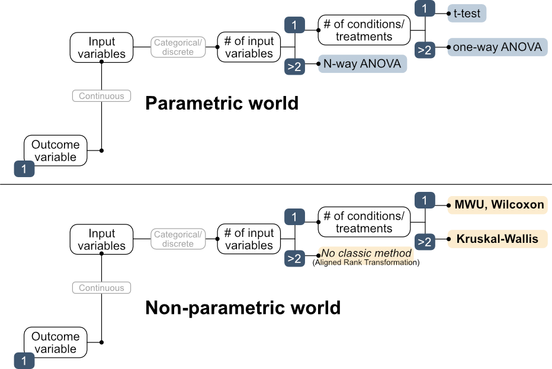
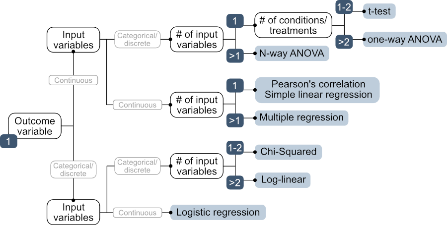
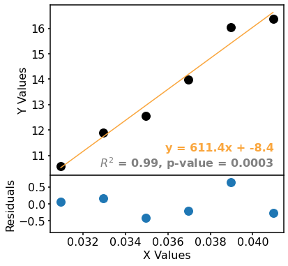

19. Correlation and Simple Linear Regression
This session covers correlation and simple linear regression — measuring, then modeling, the relationship between two continuous variables — implemented in Python with pingouin and scipy.
Code set up
Where We Are in the Decision Tree
So far, all the tests covered (t-test, one-way ANOVA, N-way ANOVA, Mann-Whitney, Wilcoxon, Kruskal-Wallis, and Friedman) have compared data with one continuous outcome variable and categorical/discrete input variables (e.g. different catalysts, different pH conditions treated as categories).

Sessions 19–21 will cover the middle branch of the decision tree: a continuous outcome with continuous input variable(s), including correlation, simple linear regression, multiple linear regression, and non-linear regression.

Correlation
Correlation quantifies the strength of a relationship between two variables, but it does not express that relationship mathematically (see regression analysis below).
Important: correlation ≠ causation. Two variables can be strongly correlated for reasons entirely unrelated to a direct causal link. We saw this previously when we discussed data visualization (example: chocolate consumption and Nobel prizes).
Much like we saw that the other statistical tests had parametric and non-parametric equivalents: correlation has parametric (Pearson’s r) and non-parametric (Spearman’s ρ) tests.
Pearson’s r (Parametric)
Pearson’s correlation coefficient measures the strength of a linear relationship between two continuous variables:
\[r = \frac{\text{Cov}(x, y)}{s_x \cdot s_y}\]
- Range: −1 to +1
- −1: perfect negative linear correlation; 0: no linear correlation; +1: perfect positive linear correlation
- Assumes both variables are approximately normally distributed
Spearman’s ρ (Non-Parametric)
Spearman’s correlation measures the strength of a monotonic relationship (consistently increasing or decreasing, but not necessarily linear):
- Based on ranks rather than raw values
- Does not require normality
- Appropriate when Pearson’s assumptions are violated or the relationship may be non-linear but monotonic
Correlation analysis in pingouin
Correlation analysis in pingouin requires very simple code. An example is provided below.
The output includes r, 95% CI, p-value, Bayes factor, and power.
Regression: an introduction
Regression expresses the relationship between variables mathematically.
If correlation tells you whether a relationship exists and how strong it is, regression tells you what the relationship looks like.
Correlation and regression go together: a strong correlation motivates fitting a regression model; the regression model then allows prediction of the outcome for new input values.
There are several types of regression. We will group regression into three categories, which will will discuss throughout the next sessions:
- Simple linear regression (SLR)
- Multiple linear regression (MLR)
- Non-linear regression
Simple Linear Regression (SLR)
Simple linear regression models a continuous outcome as a linear function of one continuous input:
\[y = \beta_0 + \beta_1 x + \varepsilon\]
where \(\beta_0\) is the intercept, \(\beta_1\) is the slope, and \(\epsilon\) is the random error term.
Components of a linear regression:
- Data points: continuous x and y
- Fitted line: the best-fit linear model
- Residuals: differences between observed and predicted values
- Goodness-of-fit metrics: how well the model explains the data
- Visualization: scatter plot with fitted line and confidence band

Ordinary Least Squares (OLS)
The most common method for fitting a linear regression is Ordinary Least Squares (OLS), which minimises the sum of squared residuals, as described by the equation belo:
\[\text{SSR} = \sum_{i=1}^{n} (y_i - \hat{y}_i)^2\]
OLS finds the line for which the total squared vertical distance from the data points to the line is minimized. Squaring the residuals (rather than taking absolute values) penalises large deviations more heavily, making the fit sensitive to outliers. This is one reason robust regression methods (which use alternative loss functions) exist and are sometimes preferred when outliers are present.
Residual Analysis
The residuals must be examined after any regression to verify that the model assumptions are met. The following properties are assumed by simple linear regression. The list also includes how to evaluate these properties.
- Linearity: residuals should show no systematic pattern when plotted against the input values (or fitted values). A curved pattern indicates non-linearity — a more complex model is needed.
- Independence: assessed at the experimental design stage (are the observations independent?)
- Normality of errors: Q-Q plot of the residuals should be approximately linear
- Homoscedasticity (equal variance): the spread of residuals should be consistent across the range of x values

Goodness-of-Fit Metrics
\(R^2\) (coefficient of determination) is the proportion of variance in y explained by the model:
\[R^2 = 1 - \frac{\text{SS}_{\text{residual}}}{\text{SS}_{\text{total}}}\]
- \(R^2\) = 0: model explains none of the variability in y
- \(R^2\) = 1: model perfectly explains the variability in y
- \(R^2\) is not appropriate for non-linear models
- In rare cases, \(R^2\) an be negative (if predictions are worse than simply predicting the mean)

Adjusted \(R^2\) provides a correction to \(R^2\) that penalises addition of unnecessary predictors.
\[R^2_{\text{adj}} = 1 - \frac{(1-R^2)(n-1)}{n-p-1}\]
Essentially, the adjustment gives a small penalty to model complexity. More complex models will typically cause a visually better fit and the \(R^2\) will also improve, BUT that does not mean that the higher complexity is justified by the data. This point is not so important for SLR, but as we consider more complex models we need to evaluate if the added complexity of the function is justified by the complexity of the data. This error metric is still not appropriate for non-linear models.
RMSE (Root Mean Square Error) is the average prediction error in the original units.
\[\text{RMSE} = \sqrt{\frac{1}{n}\sum_{i=1}^{n}(y_i - \hat{y}_i)^2}\]
- Lower indicates a better fit: 0 = perfect predictions
- Sensitive to outliers (because errors are squared)
- Appropriate for non-linear models
MAE (Mean Absolute Error) is the average absolute prediction error.
\[\text{MAE} = \frac{1}{n}\sum_{i=1}^{n}|y_i - \hat{y}_i|\]
- Less sensitive to outliers than RMSE
- Penalises all errors equally
- Appropriate for non-linear models
p-Values in Regression
For simple linear regression, the p-value tests whether the slope \(\beta_1\) is significantly different from zero (\(H_0\): \(\beta_1\) = 0, i.e. no linear relationship). A small p-value suggests the relationship is unlikely due to chance.
\(R^2\) and the p-value give complementary information. \(R^2\) tells you how much variance is explained (practical relevance); the p-value tells you whether the estimated slope is statistically different from zero (statistical significance). With large n, even tiny slopes become statistically significant (small p-value) while explaining very little variance (low \(R^2\)). However, for multiple regression, p-values for individual predictors can be important.
Assumptions of Linear Regression
- The relationship between x and y is linear
- The errors are independent of each other
- The errors are normally distributed
- The variance of errors is equal across all x values (homoscedasticity)
Violations of these assumptions (which can be detected through residual analysis, see above) indicate that a different model or a transformation is needed.
Comparing methods with python
Below is the compiled code that might be used for pingouin implementation of SLR.
While pingouin is easy to use, it is extremely limited with respect to regression beyond SLR. curve_fit is more flexible because it accepts any user-defined function, which allows it to expand to regression beyond SLR. Below is an example of the same analysis but with pingouin
As with all analysis that we have covered so far, data visualization is an essential part of data analysis.
Application of regression: Calibration Curves, LOD, and LOQ
The most common use of simple linear regression in analytical chemistry is the calibration curve. A calibration curve is a series of standards of known concentration and their responses with a fit (model) that describes the respose. The fitted line (model or prediction) is then used to estimate the concentration of an unknown sample based on the response measured for that sample.
Determining an unknown: rearrange the fitted line \(y = \beta_1 x + \beta_0\) to solve for concentration:
\[x_{\text{unknown}} = \frac{y_{\text{measured}} - \beta_0}{\beta_1}\]
Two additional features can be important when evaluating a calibration curve: the limit of dectection (LOD) and the limit of quantification (LOQ).
- The Limit of Detection (LOD) is the lowest concentration that can be reliably distinguished from a blank.
- The Limit of Quantification (LOQ) is the lowest concentration that can be measured with acceptable precision. The IUPAC definitions relate the variability of the blank to the slope (the sensitivity):
\[\text{LOD} = \frac{3.3\,\sigma}{\beta_1} \qquad \text{LOQ} = \frac{10\,\sigma}{\beta_1}\]
where \(\sigma\) is the standard deviation of the blank signal (or, equivalently, the standard error of the intercept of the calibration line) and \(\beta_1\) is the slope. A steeper slope (higher sensitivity) and a lower blank signal (lower \(\sigma\)) both lower the detection limit.
Two practical cautions:
only quantify unknowns within the calibration range. Extrapolating below the lowest standard or above the highest is unreliable. We have discussed interpolation vs. extrapolation before, and we will continue to do so over the next few lectures.
The calibration should ideally be linear over the range used; many detectors saturate at high concentrations, bending the curve. Why is this important? It becomes much less reliable to determine where you are in the curve if you are near saturation.
Example: Calibration Curve with LOD and LOQ
A spectrophotometric calibration: fit the standards, quantify an unknown, and report the detection limits.
Advanced: Calculating Confidence Intervals for the Regression Line
Confidence bands are often included in regression analysis. An advanced example of how these can be calculated in included below.
- Correlation (Pearson = linear, Spearman = monotonic) measures strength
- Regression gives an equation.
- OLS minimizes squared residuals: always inspect residuals (linearity, normality, homoscedasticity).
- \(R^2\) = variance explained; the p-value tests slope ≠ 0
- Calibration curves are simple linear regression: LOD = 3.3σ/slope, LOQ = 10σ/slope; quantify only within range.
- In Python:
pg.corr(...),pg.linear_regression(...), orscipy.optimize.curve_fit.
In Person
TBD